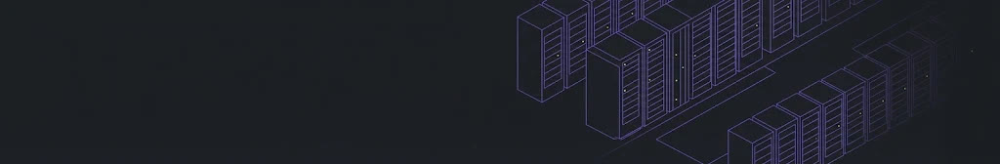
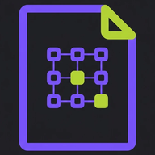

Dossier as-built Nutanix, prêt à livrer : connexion au Prism Central, collecte, document Word.
L'application redémarre sur la nouvelle version ; la collecte en cours est conservée.
Voir la releaseFacultatif : le Prism Central suffit au document. Le Prism Element y ajoute la haute disponibilité, le nom et le seuil ILM des pools de stockage et les protection domains hérités. Chaque cluster se collecte avec ses propres identifiants ; une ligne laissée sans mot de passe est ignorée.